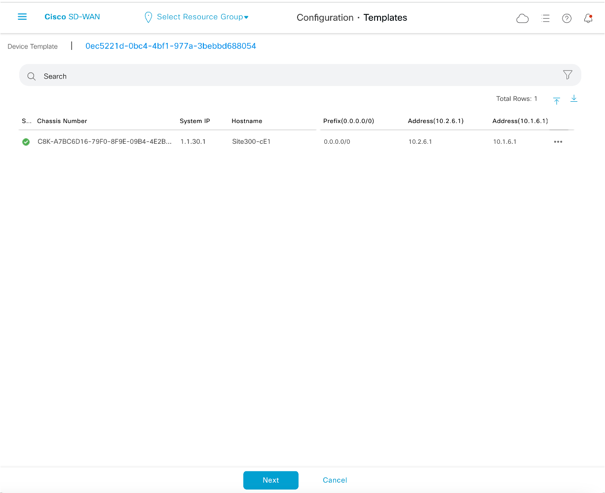
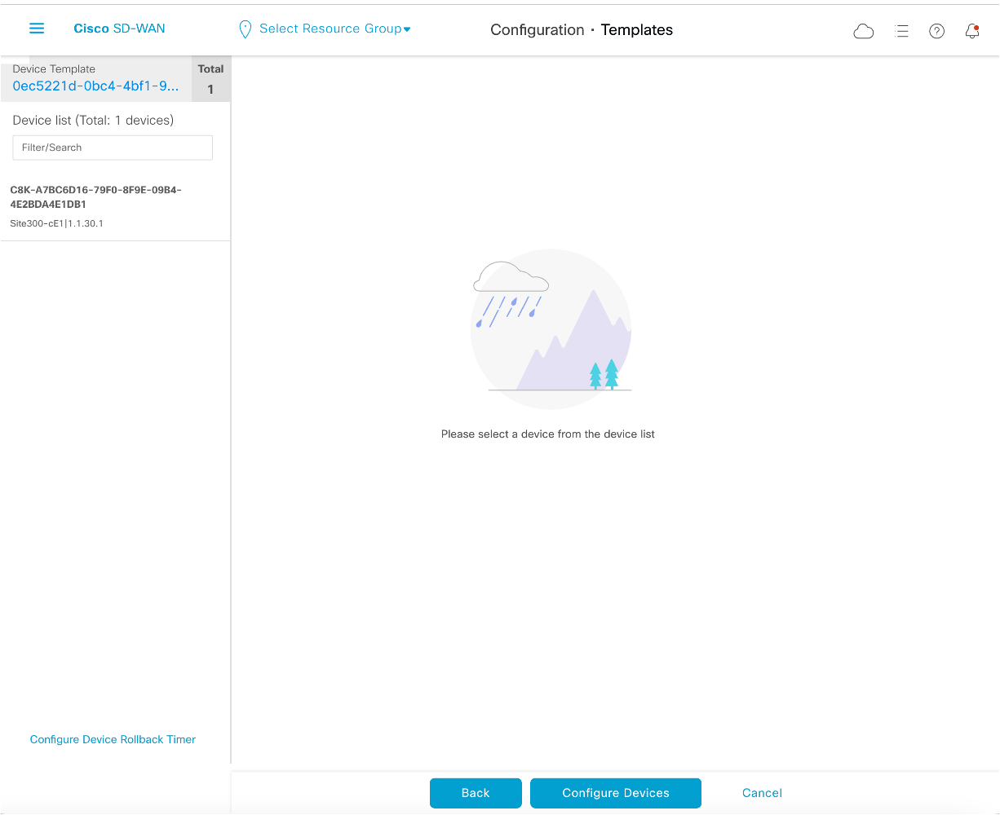
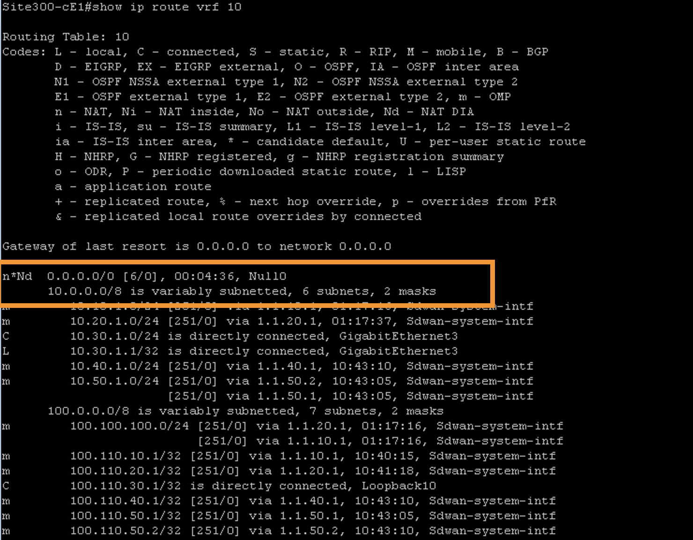

Task 4 - Direct Internet Access for Site-300
In this task, we will enable local Direct Internet Access (DIA) for Site-300. The configuration will route traffic on VPN-10 through this DIA setup. Implementing DIA at Site-300 is a strategic step towards enhancing network security. It will facilitate the setup of IPSec tunnels between Site-300 and the Umbrella Cloud, providing robust security measures from the Umbrella Cloud services. The detailed configuration of IPSec tunnels and their connectivity will be covered in a subsequent task.
Step 1 - Enable DIA on Site-300 on VPN-10
Objective: Add a default route in VPN-10 pointing to VPN-0 (Global Routing Table) on the node Site300-cE1 by modifying the VPN-10 template in vManage.
1. Navigating in vManage:
- On vManage, navigate to Configuration > Templates.

2. Accessing Feature Templates:
- Click on the
Feature Templatestab.
3. Searching for the Template:
- Use the search bar to find the template name
vpn_10_site300_ce1.
4. Editing the Template:
- Find the template and click on the three dots
...on the right side, then selectEdit.
5. Configuring IPv4 Route:
- Click on IPv4 Route.

- In the
IPv4 Routesection, perform the following configurations: - Click on
New IP Route. - In Prefix:
0.0.0.0/0 - In Gateway:
VPN - In Enable VPN, select
Globalfrom the dropdown menu.
- Set Enable VPN to
On, clickAdd, thenUpdate.
6. Applying Configuration Changes:
- Click
Next.  - Click
Configure Devicesto push the configuration from vManage towards cEdge.  - Wait and verify that the Config-Push from vManage to cEdge device is successful.

Step 2 - Verify Internet Connectivity on Site-300
Objective: Verify Internet connectivity on Site-300 VPN-10 following the successful configuration in the previous step.
1. Launching MTPutty (if needed):
- Launch MTPutty application on your RDP session (Jumphost) if it is not already open.

2. SSH to Site-300 cEdge:
- Open MTPutty and SSH/login to
Site300-cE1cEdge. - Verify VPN-10's routing table for a default route using
show ip route vrf 10. 
3. Verifying Default Route on Global Routing Table:
- Confirm the default route in the Global Routing Table (VPN-0) using
show ip route. It will point to10.2.6.1and10.1.6.1
4. Testing Connectivity on Ubuntu VM:
- Using mRemoteNG, access
Site300-Ubuntu-VPN10VM - Launch
Terminalapplication on this VM and then initiateping 8.8.8.8. The ping should be successful.
- Perform a traceroute using the command
traceroute 8.8.8.8.
- Launch
Chromium Web browserand verify Internet access by navigating towww.cisco.comor another website.
Step 3 - Internet Connectivity on other VPNs
Objective: Confirm that only Site300 VPN-10 has Direct Internet Access, while other VPNs like VPN-12 lack internet connectivity.
- Test internet connectivity on
Site300-Ubuntu-VPN12using mRemoteNG. - Perform ping tests and attempt web browsing from the Ubuntu VM on VPN-12, which should fail, indicating no internet access.
Conclusion: Upon successful completion of Task 4, Site-300 has now Direct Internet Access enabled, directing VPN-10 traffic through this newly established route. This pivotal configuration lays the groundwork for future enhancements, particularly in terms of network security through the integration with Umbrella Cloud. The foundation is now set for the next phase, which involves setting up and configuring IPSec tunnels to further secure the network infrastructure.